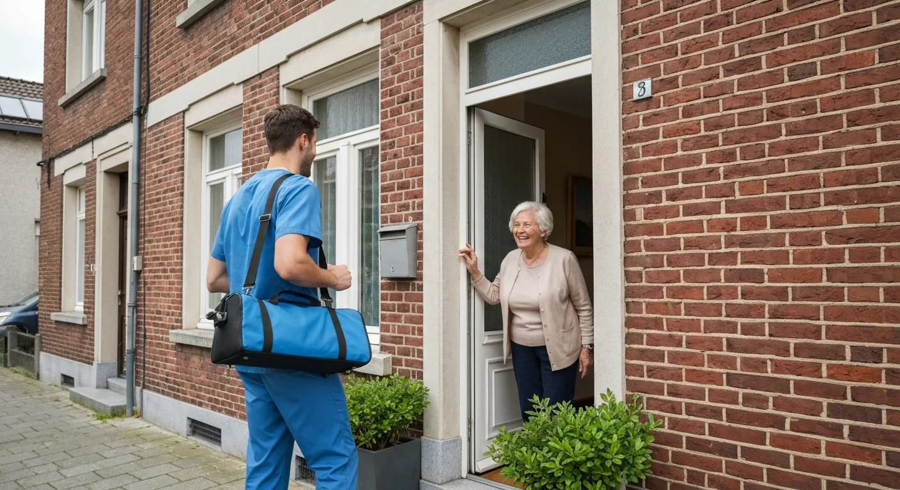

Een golferselleboog is een pijnlijke overbelasting van de pezen aan de binnenkant van de elleboog. U voelt het bij het tillen van een boodschappentas, het uitwringen van een dweil of het stevig vastnemen van een handvat. Ondanks de naam krijgen vooral mensen die nooit golf spelen ermee te maken. Het goede nieuws: met kinesitherapie en een handvol oefeningen voor thuis herstelt de pees in de meeste gevallen volledig. In dit artikel leest u hoe u een golferselleboog herkent, wat de kinesitherapeut doet, hoe het herstel in fases verloopt en welke vijf oefeningen u zelf kunt doen.
Kort samengevat
Een golferselleboog geeft pijn op de benige knobbel aan de binnenkant van de elleboog. Volledige rust helpt niet. De behandeling bestaat uit tijdelijk minder belasten, daarna stap voor stap versterken van de onderarmspieren. Reken op zes weken tot enkele maanden herstel.
Wat is een Golferselleboog?
Aan de binnenkant van uw elleboog voelt u een benige knobbel. Daar hechten de spieren aan waarmee u uw pols en vingers buigt en uw onderarm naar binnen draait. Wanneer die spieren lange tijd meer werk krijgen dan hun pezen aankunnen, raakt de peesaanhechting geïrriteerd en verandert de structuur van de pees. Artsen spreken van een mediale epicondylalgie of epicondylitis medialis.
Het gaat dus niet om een klassieke ontsteking, maar om een pees die haar belasting niet meer verdraagt. Typische uitlokkers zijn:
- Herhaald knijpen en draaien: schroeven, snoeien, schilderen, timmeren.
- Tillen met de handpalm naar boven: zware tassen, bakken, een kleinkind.
- Sporten met werp- of slagbewegingen: golf, tennis, padel, klimmen, krachttraining.
- Een plotse piek in belasting: een weekend verhuizen of de tuin winterklaar maken.
De klacht komt het meest voor tussen 40 en 60 jaar, bij mannen en vrouwen ongeveer even vaak.
Symptomen en het Verschil met een Tenniselleboog
U herkent een golferselleboog aan drukpijn op de knobbel aan de binnenkant van de elleboog, die kan uitstralen naar de onderarm. De pijn neemt toe wanneer u de pols buigt tegen weerstand, stevig knijpt of iets oppakt met de handpalm naar boven. 's Ochtends voelt de elleboog vaak stijf aan en de knijpkracht kan afnemen.
Zit de pijn net aan de andere kant, dan gaat het wellicht om een tenniselleboog. Daarover leest u meer in ons artikel over oefeningen bij een tenniselleboog.
| Golferselleboog | Tenniselleboog | |
|---|---|---|
| Plaats van de pijn | Binnenkant van de elleboog | Buitenkant van de elleboog |
| Betrokken spieren | Buigers van pols en vingers | Strekkers van pols en vingers |
| Pijn bij | Tillen met de handpalm naar boven, knijpen, wringen | Tillen met de handpalm naar beneden, een kan uitschenken |
| Hoe vaak | Minder vaak | Vaker |
Heeft u daarnaast tintelingen in de pink en ringvinger? Dan kan de zenuw die vlak achter de knobbel loopt mee geprikkeld zijn. Meld dat aan uw arts of kinesitherapeut. Tintelingen in duim, wijs- en middelvinger wijzen eerder op een carpaaltunnelsyndroom.
Wat Doet de Kinesitherapeut?
De behandeling begint met een grondig onderzoek. De kinesitherapeut test welke bewegingen de pijn uitlokken, meet uw knijpkracht en kijkt ook naar uw pols, schouder en nek. Klachten in de arm hebben namelijk soms hun oorsprong hogerop. Lees daarover ons artikel over nekpijn en cervicale kinesitherapie. Daarna volgt een plan op maat:
- Belasting doseren: samen bekijkt u welke taken de pees tijdelijk te zwaar belasten en hoe u ze anders aanpakt.
- Oefentherapie: gerichte krachtoefeningen voor de onderarm, die week na week zwaarder worden. Dit is het belangrijkste deel van de behandeling.
- Manuele technieken: massage van de onderarmspieren en mobilisatie van elleboog en pols om de spanning te verlagen.
- Advies rond werk en hobby: grepen, gereedschap, tiltechniek en pauzes.
Wie moeilijk de deur uit kan, bijvoorbeeld door hoge leeftijd of na een operatie, kan de behandeling ook thuis krijgen. Wanneer dat zinvol is, leest u in ons artikel over zeven situaties waarin kinesitherapie aan huis nodig is.

Herstel in Vier Fases
Pezen passen zich traag aan. Het herstel verloopt daarom in fases, waarbij de pees telkens een beetje meer te verwerken krijgt. De termijnen hieronder zijn richtwaarden. Hoe langer de klacht al bestaat, hoe meer geduld u nodig heeft.
pijn onder controle
lichte krachtoefeningen
zwaarder en functioneel
werk, tuin en sport
5 Oefeningen voor Thuis
Voor deze oefeningen heeft u enkel een tafel, een flesje water van een halve liter en een hamer of pollepel nodig. Hanteer de pijnregel: lichte pijn tot 3 à 4 op 10 tijdens het oefenen mag, zolang die binnen het uur weer zakt en de elleboog de volgende ochtend niet stijver is.
1. Statisch aanspannen (fase 1)
Leg uw onderarm op tafel met de handpalm naar boven. Duw met uw andere hand tegen de handpalm en probeer de pols te buigen zonder dat hij beweegt. Hou 30 tot 45 seconden aan op ongeveer de helft van uw kracht. Herhaal 4 tot 5 keer, één tot twee keer per dag. Statisch aanspannen werkt vaak pijnstillend.
2. Traag laten zakken met een gewichtje (fase 2)
Leg de onderarm op tafel met de hand over de rand, handpalm naar boven, en hou het flesje water vast. Breng de pols met hulp van de andere hand omhoog en laat het gewicht in 3 à 4 tellen traag zakken. Doe 3 reeksen van 10 tot 15 herhalingen, één keer per dag. Verzwaar pas wanneer dit vlot gaat.
3. De onderarm rekken
Strek de arm voor u uit met de handpalm naar boven. Trek met de andere hand de vingers zachtjes naar beneden en naar u toe, tot u rek voelt aan de binnenkant van de onderarm. Hou 20 tot 30 seconden aan en herhaal 3 keer. Rek zacht en niet tot in de pijn.
4. Draaien met een hamer (fase 2–3)
Hou de elleboog 90° gebogen tegen uw zij en neem een hamer of pollepel onderaan vast. Draai de onderarm traag van handpalm naar boven tot handpalm naar beneden en terug. Doe 3 reeksen van 10. Hoe verder van de kop u de hamer vasthoudt, hoe zwaarder de oefening.
5. Knijpkracht (fase 3)
Knijp in een zachte bal of een opgerolde handdoek, hou 5 seconden vast en los rustig. Herhaal 10 tot 15 keer, 2 reeksen. Later kunt u een natte handdoek uitwringen, in beide richtingen.
Tips voor het Dagelijks Leven
- Til dicht bij uw lichaam en gebruik beide handen. Draag tassen liever aan de schouder of in een rugzak.
- Kies dikkere handgrepen. Gereedschap, pennen en bestek met een dikke greep vragen minder knijpkracht.
- Wissel af en neem pauzes bij klussen, tuinwerk en computerwerk.
- Gebruik warmte bij stijfheid en eventueel een coldpack na een zware dag.
- Blijf in beweging. Wandelen of fietsen houdt uw conditie op peil terwijl de arm herstelt. Wie na een knie- of heupoperatie revalideert en door krukken elleboogklachten kreeg, kan thuis verder trainen op een hometrainer.
- Heb geduld. Een pees heeft weken nodig om sterker te worden. Het verschil tussen zelf oefenen en behandeld worden leest u in ons artikel over actieve en passieve revalidatie.
Wanneer naar de Arts?
De meeste golfersellebogen hebben geen beeldvorming of inspuiting nodig. Laat u wel nakijken in deze gevallen:
Neem contact op met uw arts bij:
- Pijn na een val of een plotse knak in de elleboog, met zwelling of een blauwe plek
- Een rode, warme en dikke elleboog of koorts
- Aanhoudende tintelingen of krachtverlies in de hand, vooral in pink en ringvinger
- Nachtelijke pijn die u wakker houdt, of geen enkele verbetering na zes weken oefenen
Kinesitherapie aan Huis bij PhysioVisit
Woont u in Grimbergen, Strombeek-Bever, Humbeek, Beigem of Koningslo en kunt u moeilijk naar een praktijk komen? Dan komt de kinesitherapeut van PhysioVisit bij u thuis. We onderzoeken uw elleboog, stellen een oefenschema op dat past bij uw dagelijkse taken en volgen uw vooruitgang op. Meer over onze aanpak bij spier- en gewrichtsklachten leest u op onze pagina over orthopedische revalidatie.
Daarnaast verhuurt PhysioVisit revalidatiemateriaal in heel België: een kinetec voor knierevalidatie aan €17 per dag en een hometrainer aan €2 per dag. Heeft u een vraag of wilt u een afspraak maken? Neem contact met ons op.
Veelgestelde Vragen
Kinesitherapie aan Huis bij Elleboogpijn?
Onze kinesitherapeut komt bij u thuis in de regio Grimbergen. Daarnaast leveren we in heel België een kinetec of hometrainer aan huis.
Conclusie
Een golferselleboog is vervelend en vraagt geduld, maar herstelt bijna altijd zonder operatie. De sleutel is de pees niet volledig te ontzien: verminder tijdelijk wat de pijn uitlokt en bouw daarna de kracht van uw onderarm stap voor stap op met de oefeningen uit dit artikel. Blijft de pijn na enkele weken even hevig, laat u dan begeleiden door een kinesitherapeut.
Wilt u weten of kinesitherapie aan huis voor u mogelijk is? Neem gerust contact met ons op. Lees ook de vijf voordelen van kinesitherapie aan huis.